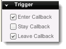

Introduction
Trigger objects (t2dTrigger) allow a rectangular region to be placed
in the scene and have events occur whenever another object enters, is
within, or leaves it. t2dTrigger objects also have a collision callback
and can respond to physics events.
Creation
To place a trigger, navigate to the Create panel. Find the Trigger object in the Other panel.
Drag and drop this into the scene where you want it to exist. Once the
trigger has been placed, it can be resized like any other object within
the Scene View.
Properties
The properties of a trigger toggle what kind of callbacks exist whenever another object interacts with it.

- Enter Callback - Receive notifications of objects
entering the Trigger Area. Causes the onEnter() callback function for
the designated behavior to be called. If no behavior is designated this
falls back to the onEnter() callback for the trigger's datablock.
- Stay Callback - Receive notifications of objects staying
in the Trigger Area. Causes the onStay() callback function for the
designated behavior to be called. If no behavior is designated this
falls back to the onStay() callback for the trigger's datablock. The Stay
callback runs every 30 milliseconds, so try not to do any really heavy work
inside of this function.
- Leave Callback - Receive notifications of objects
leaving the Trigger Area. Causes the onLeave() callback function for
the designated behavior to be called. If no behavior is designated this
falls back to the onLeave() callback for the trigger's datablock.
Script Representation
new t2dTrigger(newTriggerObject) {
canSaveDynamicFields = "1";
Position = "155.197 -85.001";
size = "82.323 538.627";
CollisionActiveSend = "1";
CollisionActiveReceive = "1";
CollisionMaxIterations = "3";
AlphaTestValue = "-1";
UsesPhysics = "1";
MountOffset = "-0.005 0.248";
MountOwned = "0";
MountInheritAttributes = "0";
mountID = "4";
mountToID = "3";
};
// This callback function is invoked when another object
// enters the trigger zone
// %this - The current trigger
// %object - ID of the object that has entered the zone
function MyTrigger::onEnter(%this, %object)
{
// Get the name of the object that entered the trigger
%name = %object.getName();
echo(%name @ " entered this trigger");
}
// This callback function is invoked when another object
// is within the trigger zone
// %this - The current trigger
// %object - ID of the object that is within the trigger
function MyTrigger::onStay(%this, %object)
{
// Get the name of the object that entered the trigger
%name = %object.getName();
echo(%name @ " is in this trigger");
}
// This callback function is invoked when an object
// leaves the trigger zone
// %this - The current trigger
// %object - ID of the object that has left the zone
function MyTrigger::onLeave(%this, %object)
{
// Get the name of the object that left the trigger
%name = %object.getName();
echo(%name @ " exited this trigger");
}
Conclusion
Trigger objects allow your worlds to come to life with real time
events. Use them to toggle the dispensing of coins when hitting blocks,
or when the player has reached the level boss, amongst numerous other
things. |